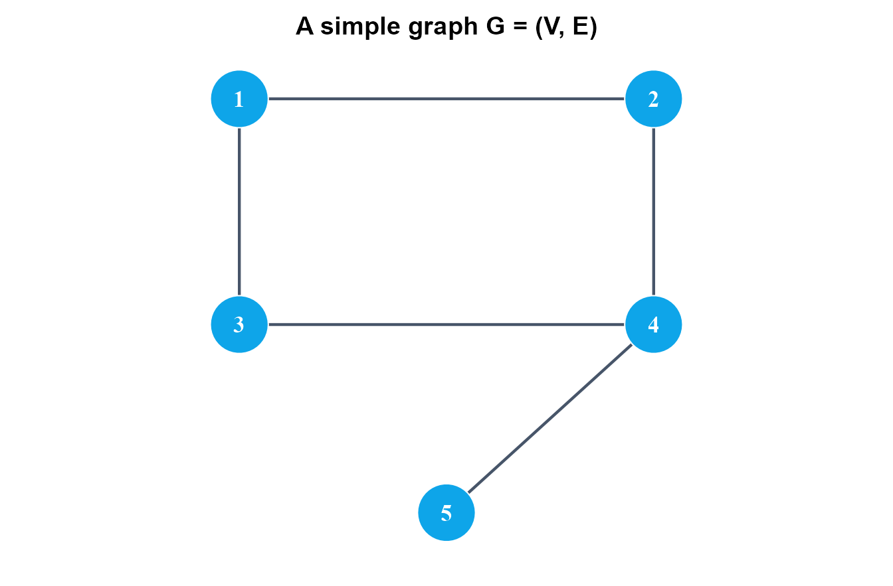
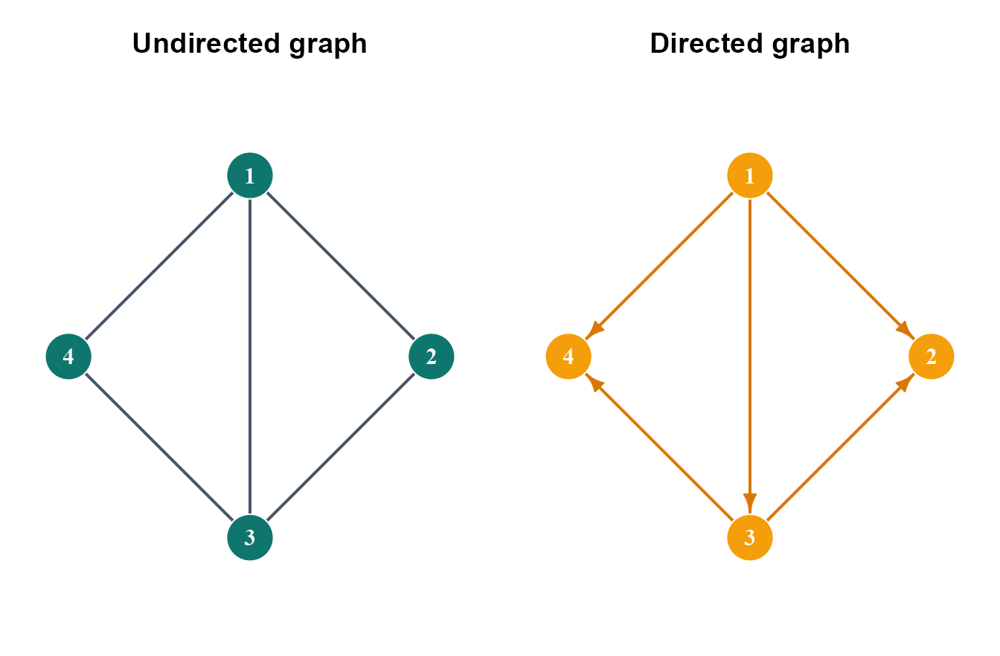
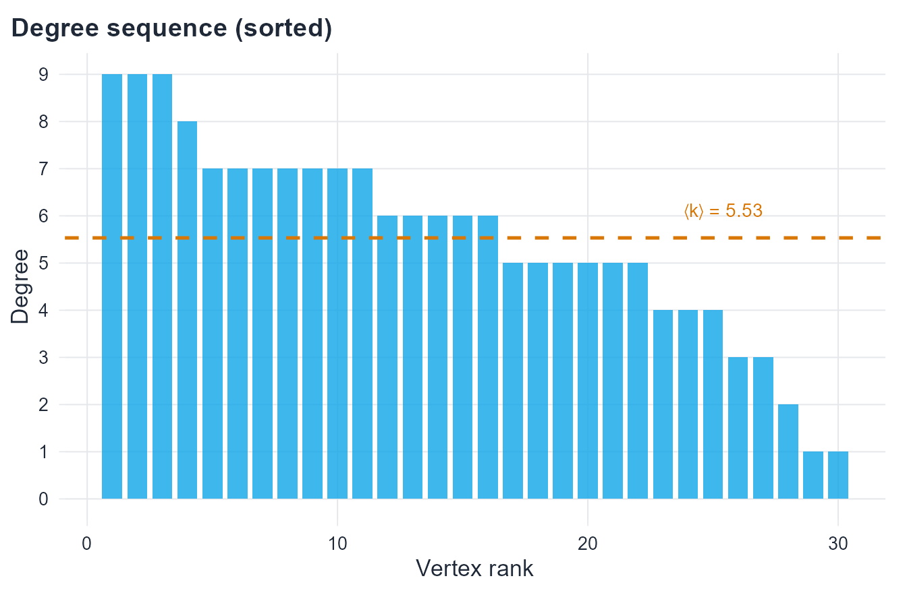
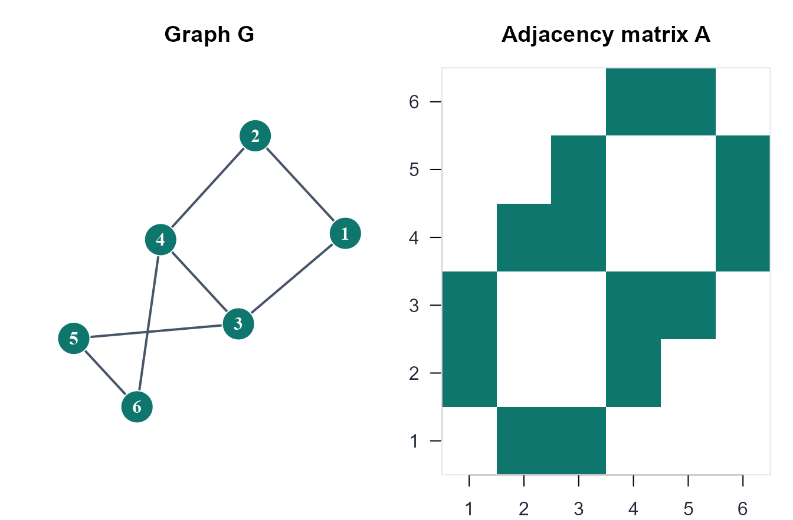
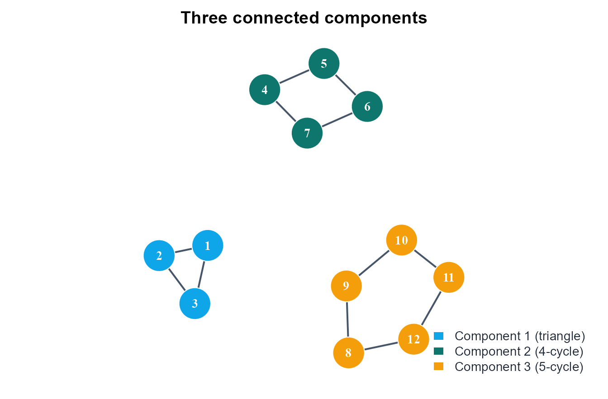
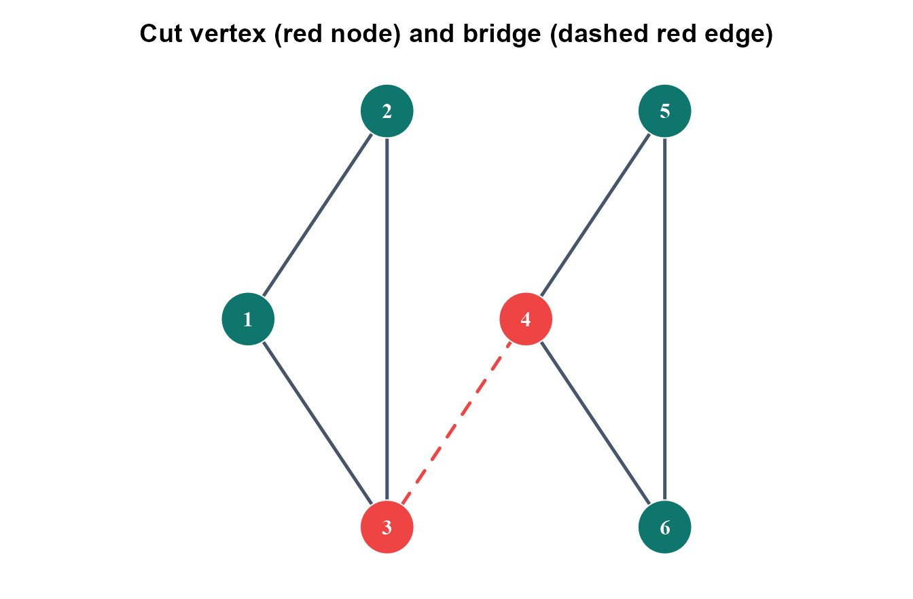
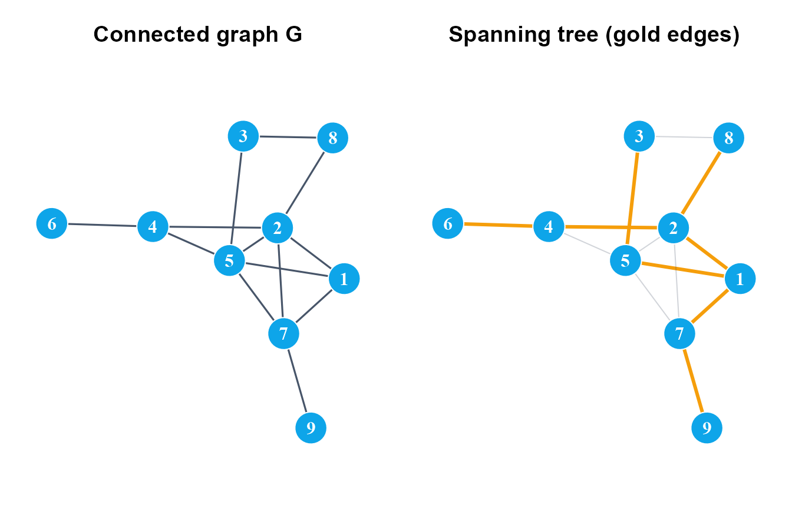
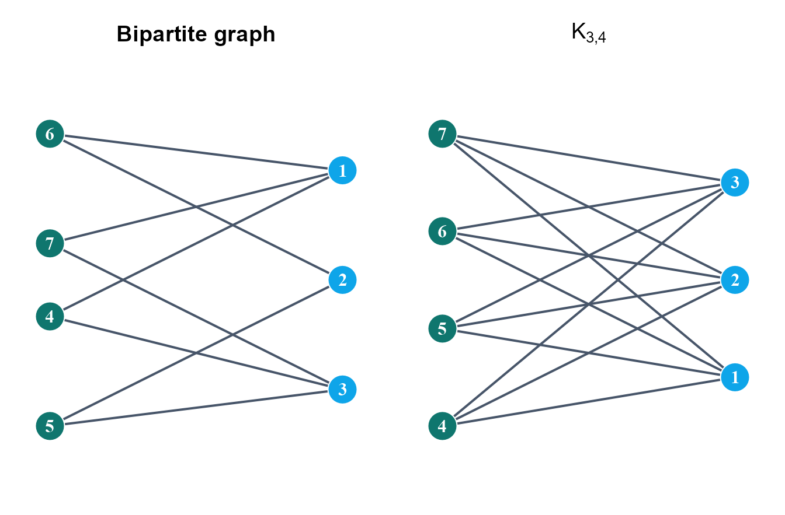
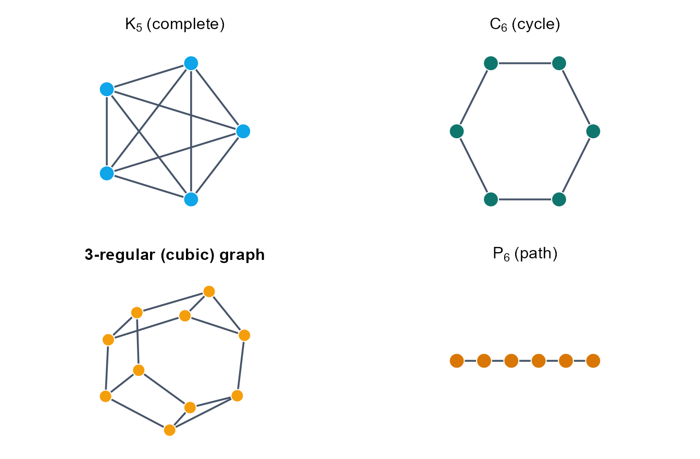

3 Graph Theory
The mathematical language of network structure
3.1 Introduction
Network science rests on a mathematical foundation: graph theory. Before studying random graphs, small-world structure, or scale-free degree heterogeneity, it is essential to establish the formal language used to describe networks precisely.
Graph theory is a branch of discrete mathematics concerned with collections of objects and the pairwise relations between them. Its origins trace to Leonhard Euler’s 1736 solution to the Königsberg bridge problem, in which the question of whether a city could be traversed by crossing each of its seven bridges exactly once was reformulated as a purely combinatorial question about a drawing of vertices and edges. Euler’s insight — that only the pattern of connections, not the physical geography, determines the answer — is the founding idea of graph theory (Euler, 1736).
In the context of this course, graph theory provides:
- a precise vocabulary for describing network structure,
- algebraic representations that connect combinatorics to linear algebra,
- combinatorial results that govern global properties such as connectivity and reachability,
- and the rigorous foundation on which the probabilistic models of later chapters are built (Barabási & Pósfai, 2016; Diestel, 2017; Newman, 2010; West, 2001).
Standard graduate references for the material in this chapter are Diestel (2017) for pure graph theory and West (2001) for a combinatorial treatment. For the network science perspective that motivates the choice of topics, see Newman (2010) and Barabási & Pósfai (2016). Spectral properties of graphs, covered in Section 3.7, are treated in depth by Chung (1997).
3.2 Learning goals
By the end of this chapter, a student should be able to:
- represent a network as G = (V, E) and report its order, size, and degree structure,
- translate between edge lists, adjacency matrices, and
igraphobjects, - state and apply the handshaking lemma and its immediate consequences,
- explain what matrix powers count, and how the Laplacian spectrum encodes connectivity,
- distinguish paths, components, cut vertices, and bridges — the vocabulary used later for robustness and percolation,
- recognise when a graph is bipartite and apply König’s criterion,
- compute the summary quantities in Table 3.1 and interpret them structurally.
3.3 Chapter roadmap
The chapter proceeds from basic objects to structural concepts. It begins with the formal definition of a graph and the main graph types, then studies degree and matrix representations, and turns to walks, connectivity, trees, and bipartite structure. It ends with a compact computational toolkit in R. Each theoretical definition is paired with a concrete representation that can be explored and verified computationally.
3.4 What is a graph?
Formal definition
Definition 3.1 A graph G is an ordered pair
G = (V, E)
where V is a finite non-empty set called the vertex set (or node set), and E is a set of unordered pairs \{u, v\} with u, v \in V and u \neq v, called the edge set.
The number of vertices is denoted N = |V| and called the order of the graph. The number of edges is denoted M = |E| and called the size of the graph.
Two vertices u and v are adjacent (or neighbors) if \{u, v\} \in E. An edge \{u, v\} is incident to each of u and v. The neighborhood of v is the set N(v) = \{u \in V : \{u, v\} \in E\}.
NoteConvention
Throughout this chapter, all graphs are assumed to be simple unless stated otherwise. A simple graph contains no self-loops (edges from a vertex to itself) and no multi-edges (multiple edges between the same pair of vertices).
A motivating example
Consider the graph with vertex set V = \{1, 2, 3, 4, 5\} and edge set
E = \bigl\{\{1,2\},\, \{1,3\},\, \{2,4\},\, \{3,4\},\, \{4,5\}\bigr\}.
This graph has order N = 5 and size M = 5. Vertex 4 is the only neighbor of vertex 5 and the only common neighbor of vertices 2 and 3 — structural features that will become precise once degree and connectivity are defined.
3.5 Directed and undirected graphs
The definition above treats each edge as unordered: the relation \{u, v\} is symmetric. Such a graph is undirected. In many real networks, relations are asymmetric — a hyperlink from page u to page v does not imply a link in the reverse direction; a neuron may send signals to a target without receiving signals back.
Definition 3.2 A directed graph (or digraph) is a pair G = (V, A) where V is the vertex set and A is a set of ordered pairs (u, v) with u \neq v, called arcs. The arc (u, v) has tail u and head v; it is distinct from (v, u).

Weighted graphs
Definition 3.3 A weighted graph is a graph G = (V, E) together with a weight function w : E \to \mathbb{R}, assigning a real-valued weight to each edge. Weights may represent distances, capacities, interaction strengths, or costs, depending on the application.
3.6 Degree and the handshaking lemma
Degree of a vertex
Definition 3.4 Let G = (V, E) be an undirected graph. The degree of vertex v \in V, denoted k_v or \deg(v), is the number of edges incident to v:
k_v = |\{u \in V : \{u,v\} \in E\}| = |N(v)|.
A vertex with k_v = 0 is isolated; one with k_v = 1 is a leaf or pendant vertex. The maximum and minimum degrees of G are denoted \Delta(G) and \delta(G) respectively.
Degree sequence
Definition 3.5 The degree sequence of G is the list of vertex degrees arranged in non-increasing order:
k_1 \geq k_2 \geq \cdots \geq k_N.
The degree sequence is a fundamental invariant of the graph. Not every integer sequence is graphical — the Erdős–Gallai theorem gives a necessary and sufficient condition for a sequence of non-negative integers to be realizable as a degree sequence of a simple graph.
The handshaking lemma
Theorem 3.1 Handshaking Lemma. For any undirected graph G = (V, E),
\sum_{v \in V} k_v = 2M.
Proof. Consider the incidence sum \sum_{v \in V} \sum_{e \in E} \mathbf{1}[v \in e]. Evaluated by vertex, it equals \sum_{v} k_v. Evaluated by edge, each edge \{u,v\} contributes exactly 1 to v = u and exactly 1 to v, so the sum equals 2M. \square
NoteImmediate corollary
Every graph has an even number of odd-degree vertices. Since 2M is even, the sum \sum_v k_v is even; an even sum requires an even count of odd summands.
Average degree
Definition 3.6 The average degree of G is
\langle k \rangle = \frac{1}{N} \sum_{v \in V} k_v = \frac{2M}{N}.
The identity \langle k \rangle = 2M/N follows immediately from the handshaking lemma. It connects average degree, edge count, and graph order in a single formula that recurs throughout this book.
In-degree and out-degree in directed graphs
In a directed graph, each arc contributes asymmetrically to two vertices.
Definition 3.7 Let G = (V, A) be a directed graph and v \in V. The in-degree of v is
k_v^{\text{in}} = |\{u \in V : (u, v) \in A\}|
and the out-degree of v is
k_v^{\text{out}} = |\{u \in V : (v, u) \in A\}|.
The directed analogue of the handshaking lemma states:
\sum_{v \in V} k_v^{\text{in}} = \sum_{v \in V} k_v^{\text{out}} = |A|.
Every arc (u, v) contributes 1 to the out-degree of u and 1 to the in-degree of v.

3.7 Matrix representations
Matrix representations are central to network science because they translate combinatorial graph structure into linear-algebraic objects, making it possible to study connectivity, diffusion, centrality, and spectral properties computationally (Chung, 1997; Newman, 2010). The adjacency matrix and the Laplacian are the two most important representations; a comprehensive treatment of their spectral theory is given in Chung (1997).
The adjacency matrix
Definition 3.8 Let G = (V, E) be a graph with V = \{1, 2, \ldots, N\}. The adjacency matrix of G is the N \times N matrix A defined entry-wise by
A_{ij} = \begin{cases} 1 & \text{if } \{i, j\} \in E, \\ 0 & \text{otherwise.} \end{cases}
For an undirected graph, A is symmetric: A_{ij} = A_{ji} for all i, j. For a simple graph, A_{ii} = 0 for all i.
Key properties
Several properties follow immediately from the definition:
- The row sum of row i equals the degree of vertex i: \sum_j A_{ij} = k_i.
- The total sum of all entries equals 2M: \sum_{i,j} A_{ij} = 2M.
- The entry (A^r)_{ij} of the r-th matrix power counts the number of walks of length r from vertex i to vertex j.
The third property follows from the definition of matrix multiplication: (A^2)_{ij} = \sum_k A_{ik} A_{kj} counts the number of common neighbors of i and j, which is exactly the number of walks of length 2 connecting them. The argument extends by induction to any r \geq 1.
The degree matrix
Definition 3.9 The degree matrix D is the N \times N diagonal matrix with D_{ii} = k_i and D_{ij} = 0 for i \neq j.
The Laplacian matrix
Definition 3.10 The Laplacian matrix of G is
L = D - A.
The Laplacian is symmetric and positive semi-definite. Its entries are:
L_{ij} = \begin{cases} k_i & \text{if } i = j, \\ -1 & \text{if } \{i, j\} \in E, \\ 0 & \text{otherwise.} \end{cases}
Two structural facts about L are fundamental:
- The smallest eigenvalue of L is always 0, with eigenvector \mathbf{1} (the all-ones vector), because L\mathbf{1} = D\mathbf{1} - A\mathbf{1} = \mathbf{k} - \mathbf{k} = \mathbf{0}. The multiplicity of the zero eigenvalue equals the number of connected components.
- The Fiedler value \lambda_2(L) — the second-smallest eigenvalue, introduced by Fiedler (1973) — measures how well-connected the graph is. A larger \lambda_2 implies greater robustness: more edge-disjoint paths exist between typical pairs of vertices (Chung, 1997).

3.8 Walks, paths, and cycles
Walk, trail, and path
Definition 3.11 A walk of length \ell in G is a finite sequence of vertices
v_0, v_1, \ldots, v_\ell
such that \{v_{i-1}, v_i\} \in E for every i = 1, \ldots, \ell. A walk may repeat vertices and edges.
Definition 3.12 A trail is a walk in which no edge is repeated. A path is a walk in which no vertex is repeated (which implies no edge is repeated).
The distance d(u, v) between two vertices is the length of a shortest path connecting them (or \infty if no path exists). The diameter D(G) = \max_{u,v} d(u,v) is the maximum distance over all pairs of vertices.
Cycle
Definition 3.13 A cycle is a closed walk v_0, v_1, \ldots, v_\ell = v_0 of length \ell \geq 3 in which all vertices v_0, \ldots, v_{\ell-1} are distinct. The girth of G is the length of its shortest cycle. A graph with no cycles is acyclic.
NoteMatrix powers and triangle counting
Because (A^r)_{ij} counts walks of length r from i to j, the diagonal entry (A^3)_{ii} counts closed walks of length 3 through i — that is, the number of triangles containing i. Summing over all vertices and dividing by 6 (two traversal directions \times three starting vertices per triangle) gives:
\text{triangles}(G) = \frac{1}{6} \operatorname{tr}(A^3).
This identity connects combinatorial structure to a straightforward matrix computation.
3.9 Connectivity
Connected components
Definition 3.14 An undirected graph G is connected if for every pair of distinct vertices u, v \in V, there exists a path from u to v. A connected component is a maximal connected subgraph of G.
The number of connected components is denoted c(G); c(G) = 1 if and only if G is connected. The multiplicity of the zero eigenvalue of L equals c(G) — providing an algebraic route to detecting components.
Strong and weak connectivity in directed graphs
Definition 3.15 A directed graph is strongly connected if for every ordered pair (u, v) there is a directed path from u to v. It is weakly connected if the underlying undirected graph (obtained by ignoring arc directions) is connected.
Strong connectivity requires reachability in both directions between every pair of vertices. A directed graph can be weakly connected without being strongly connected.

Cut vertices and bridges
Two structural elements are critical for understanding how connectivity can fail.
Definition 3.16 A cut vertex (or articulation point) is a vertex v whose removal strictly increases the number of connected components: c(G - v) > c(G).
Definition 3.17 A bridge is an edge e whose removal strictly increases the number of connected components: c(G - e) > c(G).
Cut vertices and bridges are the most fragile elements of a connected graph. Their removal disconnects the network — a property directly relevant to network robustness, examined in detail in Chapter 7. Note that every bridge \{u,v\} is contained in no cycle: if it were, its removal would leave u and v connected via the cycle, contradicting the definition.

3.10 Trees and spanning trees
Definition and characterisation
Definition 3.18 A tree is a connected acyclic graph. A forest is an acyclic graph (whose connected components are trees).
Theorem 3.2 Theorem. Let G be a graph with N vertices. The following are equivalent:
- G is a tree.
- G is connected and has exactly N - 1 edges.
- G is acyclic and has exactly N - 1 edges.
- Any two distinct vertices are connected by exactly one path.
- G is connected, and removing any single edge disconnects it (equivalently, every edge is a bridge).
The equivalence of these statements is classical; proofs appear in Diestel (2017, Ch. 1) and West (2001, Ch. 2). In particular, M = N - 1 is both necessary and sufficient for a connected graph to be a tree. This identity will resurface in Chapter 4 when characterising the giant component of a random graph near the phase transition.
Spanning trees
Definition 3.19 A spanning tree of a connected graph G = (V, E) is a subgraph T = (V, E'), with E' \subseteq E, that is itself a tree — it contains all N vertices with exactly N-1 edges, is connected, and is acyclic.
Every connected graph possesses at least one spanning tree. When edge weights are present, the minimum spanning tree minimises total edge weight; the Kruskal and Prim algorithms find it in O(M \log N) time.

3.11 Bipartite graphs
Definition and König’s criterion
Definition 3.20 A graph G = (V, E) is bipartite if V can be partitioned into two non-empty disjoint sets X and Y such that every edge has one endpoint in X and one in Y. The pair (X, Y) is the bipartition.
Bipartite graphs admit no edges within X or within Y. They arise naturally in two-mode network models: authors and papers, genes and diseases, employees and projects.
Theorem 3.3 Theorem (Kőnig, 1916). A graph G is bipartite if and only if it contains no cycle of odd length.
This criterion is both elegant and computationally efficient: bipartiteness is detected by a two-coloring of G, executable in O(N + M) time by breadth-first search (West, 2001). When BFS assigns the same color to both endpoints of any edge, an odd cycle has been found and the graph is not bipartite. Bipartite graphs arise naturally in two-mode network models — authors and papers, genes and diseases, employees and projects — and require adapted statistical tools; see Newman (2010, Ch. 6) for a discussion of projection methods.
Complete bipartite graph
Definition 3.21 The complete bipartite graph K_{m,n} is the bipartite graph with |X| = m and |Y| = n in which every vertex of X is adjacent to every vertex of Y. It has mn edges, n vertices of degree m, and m vertices of degree n.

3.12 Special graph families
Several families appear repeatedly in network science as benchmarks and building blocks.
Definition 3.22 The complete graph K_N is the simple graph on N vertices in which every pair of distinct vertices is adjacent. It has M = \binom{N}{2} edges and every vertex has degree N - 1.
Definition 3.23 The cycle graph C_N is a single cycle through all N vertices: every vertex has degree 2 and the graph has N edges.
Definition 3.24 The path graph P_N has N vertices forming a single path: the two endpoints have degree 1, all interior vertices have degree 2, and the graph has N - 1 edges.
Definition 3.25 A graph is k-regular if every vertex has degree exactly k. The complete graph K_N is (N-1)-regular; C_N is 2-regular.

3.13 Subgraphs and graph isomorphism
Definition 3.26 A graph H = (V', E') is a subgraph of G = (V, E) if V' \subseteq V and E' \subseteq E. It is an induced subgraph on V' \subseteq V, written G[V'], if E' contains every edge of G with both endpoints in V'.
Definition 3.27 Two graphs G = (V_1, E_1) and H = (V_2, E_2) are isomorphic, written G \cong H, if there exists a bijection \phi : V_1 \to V_2 preserving adjacency:
\{u, v\} \in E_1 \iff \{\phi(u), \phi(v)\} \in E_2.
The function \phi is a graph isomorphism.
Isomorphic graphs are structurally identical: one is a relabeling of the other. A necessary condition for isomorphism is that the two graphs share the same degree sequence — but this is not sufficient. Constructing non-isomorphic graphs with the same degree sequence is a useful exercise in understanding what degree alone can and cannot determine.
3.14 Working with graphs in R
The igraph package provides a comprehensive toolkit for constructing, manipulating, and analysing graphs in R.
Constructing graphs
Show code
library(igraph)
# From an edge list
g1 <- graph_from_edgelist(
matrix(c(1,2, 1,3, 2,3, 3,4, 4,5), ncol = 2, byrow = TRUE),
directed = FALSE
)
# From an adjacency matrix
A_mat <- matrix(c(0,1,1,0,
1,0,1,1,
1,1,0,0,
0,1,0,0), nrow = 4)
g2 <- graph_from_adjacency_matrix(A_mat, mode = "undirected")
# Special constructors
g_cycle <- make_ring(8)
g_full <- make_full_graph(6)
g_random <- sample_gnp(n = 20, p = 0.20, directed = FALSE)Basic graph attributes
Show code
cat("Order (vertices): ", vcount(g1), "\n")Order (vertices): 5 Show code
cat("Size (edges): ", ecount(g1), "\n")Size (edges): 5 Show code
cat("Degree sequence: ",
paste(sort(degree(g1), decreasing = TRUE), collapse = " "), "\n")Degree sequence: 3 2 2 2 1 Show code
cat("Average degree: ", round(mean(degree(g1)), 3), "\n")Average degree: 2 Show code
cat("Is connected?: ", is_connected(g1), "\n")Is connected?: TRUE Show code
cat("Number of components: ", components(g1)$no, "\n")Number of components: 1 Show code
cat("Diameter: ", diameter(g1), "\n")Diameter: 3 Show code
cat("Girth: ", girth(g1)$girth, "\n")Girth: 3 Adjacency and Laplacian matrices
Show code
A_out <- as.matrix(as_adjacency_matrix(g1))
D_out <- diag(rowSums(A_out))
L_out <- D_out - A_out
eigs <- round(sort(eigen(L_out)$values), 6)
cat("Adjacency matrix:\n")Adjacency matrix:Show code
print(A_out) [,1] [,2] [,3] [,4] [,5]
[1,] 0 1 1 0 0
[2,] 1 0 1 0 0
[3,] 1 1 0 1 0
[4,] 0 0 1 0 1
[5,] 0 0 0 1 0Show code
cat("\nLaplacian eigenvalues:\n")
Laplacian eigenvalues:Show code
print(eigs)[1] 0.000000 0.518806 2.311108 3.000000 4.170086Show code
cat("\nFiedler value (algebraic connectivity):", eigs[2], "\n")
Fiedler value (algebraic connectivity): 0.518806 Since g1 is connected, L has exactly one zero eigenvalue. The Fiedler value \lambda_2 > 0 confirms connectivity; its magnitude quantifies how robustly the graph is connected.
Triangle counting via matrix trace
Show code
A3 <- A_out %*% A_out %*% A_out
n_tri <- sum(diag(A3)) / 6
cat("Number of triangles (via tr(A^3)/6):", n_tri, "\n")Number of triangles (via tr(A^3)/6): 1 Show code
cat("Number of triangles (igraph) :", sum(count_triangles(g1)) / 3, "\n")Number of triangles (igraph) : 1 3.15 Summary of key definitions
The table below collects the most important quantities introduced in this chapter.
| Symbol | Quantity | Formula |
|---|---|---|
| N = \lvert V \rvert | Order | \lvert V \rvert |
| M = \lvert E \rvert | Size | \lvert E \rvert |
| k_v | Degree of v | \lvert \{u: uv\in E\} \rvert |
| \langle k \rangle | Average degree | 2M/N |
| A | Adjacency matrix | A_{ij}=\mathbf{1}[ij\in E] |
| L | Laplacian matrix | D-A |
| d(u,v) | Distance | Length of shortest u-v path |
| D(G) | Diameter | \max_{u,v} d(u,v) |
| c(G) | Component count | Maximal connected subgraph count |
| \lambda_2(L) | Fiedler value | 2nd smallest eigenvalue of L |
3.16 Exercises
The exercises below are designed for MSc-level students. They do not ask you to reproduce derivations from the text. Instead, they ask you to apply, extend, and connect the ideas introduced in this chapter. Several problems have no unique answer — the goal is precise reasoning, not a single correct number.
ImportantOrientation
These problems train you to work with the quantities in Table 3.1 as diagnostic tools. The same tools reappear throughout the course — in random graph theory, small-world models, and network robustness. The habit of computing, interpreting, and questioning each quantity is what this chapter is building.
Exercise 1. Degree sequences: existence and uniqueness
- Give an example of two non-isomorphic graphs on six vertices that share the same degree sequence. Prove they are not isomorphic.
- State (without proof) the Erdős–Gallai condition (Erdős & Gallai, 1960) for a sequence of non-negative integers to be graphical. Apply it to determine which of the following sequences are degree sequences of a simple graph:
- (4, 3, 3, 2, 2),
- (5, 3, 3, 2, 1),
- (4, 4, 3, 3, 2, 2).
- Prove that there is no simple graph whose degree sequence is (5, 4, 3, 2, 1) on five vertices. What goes wrong?
Exercise 2. The Laplacian as a diagnostic tool
Let G be the graph on \{1,2,3,4\} with edge set \{\{1,2\},\{1,3\},\{2,3\},\{3,4\}\}.
- Write A and L = D - A explicitly.
- Compute the eigenvalues of L (numerically is fine). Verify that the smallest is 0 and that its multiplicity matches c(G).
- Now delete the edge \{3,4\} and recompute the Laplacian spectrum. What changes, and why? Interpret the Fiedler value before and after deletion.
- A student claims: “The Fiedler value tells us how many edges we need to remove to disconnect the graph.” Is this correct? Give a precise statement of what \lambda_2 does and does not tell us.
Exercise 3. Matrix powers and walk counting
Let A be the adjacency matrix of the motivating graph from Section 3.4.2.
- Compute A^2 and A^3 (by hand or in R).
- Use (A^2)_{ij} to identify all pairs of vertices at distance exactly 2. Verify against the graph directly.
- Use \operatorname{tr}(A^3)/6 to count triangles. Explain why the factor 6 appears.
- The entry (A^r)_{ij} counts walks, not paths. Construct a specific example (using this or any other graph) where (A^2)_{ij} > 0 but the number of paths of length 2 from i to j is strictly less than (A^2)_{ij}. Explain the discrepancy.
Exercise 4. Connectivity and fragility
Consider the graph formed by two triangles, \{1,2,3\} and \{4,5,6\}, joined by the single edge \{3,4\}.
- Identify all cut vertices and bridges. Justify each answer using the definitions in Definition 3.16 and Definition 3.17.
- Prove that every bridge is contained in no cycle. Use this to explain why P_N has N-2 cut vertices and N-1 bridges, while C_N has neither.
- Compute the Fiedler value for the two-triangle graph and for C_6 (which has the same number of vertices and edges). Which is larger? Does the Fiedler value correctly predict which graph is more fragile? Discuss any limitations of this comparison.
- In
igraph, usearticulation_points()and an edge-deletion loop to verify your classification. Report your code and output.
Exercise 5. Trees: characterisation and counting
- Prove that a connected graph G with N vertices is a tree if and only if it has exactly N-1 edges. Your proof should use the equivalences in Theorem 3.2.
- How many distinct labeled trees exist on N = 4 vertices? List them explicitly and verify using Cayley’s formula N^{N-2} (Cayley, 1889).
- A graph G has N = 10 vertices and M = 9 edges. A student concludes it must be a tree. Is this necessarily true? If not, give a counterexample and state the missing condition.
- In
igraph, generate a random tree on 15 vertices usingsample_tree(15). Verify that it satisfies all five conditions in Theorem 3.2 computationally.
Exercise 6. Bipartite structure: theory and detection
- Prove König’s criterion: a graph is bipartite if and only if it contains no odd cycle. (Hint: for the forward direction, show that a 2-colouring assigns opposite colours to endpoints of every edge; for the reverse, show BFS produces a valid 2-colouring when no odd cycle exists.)
- The complete bipartite graph K_{m,n} has mn edges. Derive a formula for its average degree \langle k \rangle in terms of m and n. For what value of m (with n fixed) is \langle k \rangle maximised, and does this make sense intuitively?
- Consider the following adjacency matrix:
A = \begin{pmatrix} 0 & 1 & 0 & 1 \\ 1 & 0 & 1 & 0 \\ 0 & 1 & 0 & 1 \\ 1 & 0 & 1 & 0 \end{pmatrix}.
Without drawing the graph, determine whether it is bipartite using only the eigenvalues of A. (Hint: a graph is bipartite if and only if its adjacency spectrum is symmetric about zero (Chung, 1997).)
- Give a concrete real-world example of a network that is naturally bipartite. Explain what would be structurally wrong with computing the standard clustering coefficient on this network without accounting for its bipartite nature.
Exercise 7. Comparative network profile
Using the igraph workflow from Section 3.14, construct the following four graphs:
- K_5,
- C_{10},
- P_{10},
- one connected realisation of G(20, 0.20).
For each graph, compute: order, size, \langle k \rangle, diameter, c(G), and \lambda_2(L) where applicable. Organise the results in a single table.
- The path P_{10} and cycle C_{10} have the same number of vertices but very different diameters. Express both diameters in closed form and prove your answers.
- Rank the four graphs by Fiedler value. Explain, in terms of graph structure, why the ranking comes out as it does.
- The random graph G(20, 0.20) is not deterministic. Repeat the construction five times. How stable are the quantities in your table across realisations? Which quantity varies most?
- Write a short paragraph (5–8 sentences) identifying which of these graphs would make the most informative null model for comparison when, in the next chapter, we ask what a random graph typically looks like — and why.
3.17 Bridge to the next chapter
This chapter has treated graphs as deterministic mathematical objects: the vertex set and edge set are given, and the task is to reason about the resulting structure. The next chapter changes this viewpoint. Instead of fixing one graph in advance, we study probability models that generate many possible graphs. The language established here — degree, adjacency matrix, connectivity, trees, Laplacian spectrum — becomes the vocabulary used to describe what a random graph typically looks like and how its properties emerge from a simple probabilistic rule.
3.18 Concluding remarks
Graph theory provides the rigorous language on which network science depends. The definitions introduced here — graphs, adjacency matrices, degrees, paths, connectivity, trees, bipartiteness — are not merely formal conventions. They are the precise tools that make it possible to state questions unambiguously, derive results exactly, and implement algorithms correctly.
Several structural themes run through this chapter: a graph encodes only the pattern of connections; the adjacency matrix links combinatorics to linear algebra; the handshaking lemma is a universal constraint; connectivity, trees, and bipartiteness are global properties that determine much of a graph’s character; and the Laplacian spectrum connects graph structure to spectral properties, with \lambda_2 measuring robustness.
These foundations appear in every subsequent chapter. The Erdős–Rényi (Erdős & Rényi, 1959, 1960), Watts–Strogatz (Watts & Strogatz, 1998), and Barabási–Albert (Barabási & Albert, 1999) models are all built on top of the graph-theoretic language established here. Before asking how likely a graph with certain properties is, one must be able to describe those properties precisely — and that is what this chapter has provided.
Barabási, A.-L., & Albert, R. (1999). Emergence of scaling in random networks. Science, 286(5439), 509–512. https://doi.org/10.1126/science.286.5439.509
Barabási, A.-L., & Pósfai, M. (2016). Network science. Cambridge University Press.
Cayley, A. (1889). A theorem on trees. Quarterly Journal of Pure and Applied Mathematics, 23, 376–378.
Chung, F. R. K. (1997). Spectral graph theory (Vol. 92). American Mathematical Society.
Diestel, R. (2017). Graph theory (5th ed.). Springer. https://doi.org/10.1007/978-3-662-53622-3
Erdős, P., & Gallai, T. (1960). Graphs with prescribed degrees of vertices. Matematikai Lapok, 11, 264–274.
Erdős, P., & Rényi, A. (1959). On random graphs i. Publicationes Mathematicae, 6, 290–297.
Erdős, P., & Rényi, A. (1960). On the evolution of random graphs. Publications of the Mathematical Institute of the Hungarian Academy of Sciences, 5, 17–61.
Euler, L. (1736). Solutio problematis ad geometriam situs pertinentis. Commentarii Academiae Scientiarum Imperialis Petropolitanae, 8, 128–140.
Fiedler, M. (1973). Algebraic connectivity of graphs. Czechoslovak Mathematical Journal, 23(2), 298–305.
Kőnig, D. (1916). Über graphen und ihre anwendung auf determinantentheorie und mengenlehre. Mathematische Annalen, 77(4), 453–465. https://doi.org/10.1007/BF01456961
Newman, M. E. J. (2010). Networks: An introduction. Oxford University Press.
Watts, D. J., & Strogatz, S. H. (1998). Collective dynamics of ’small-world’ networks. Nature, 393(6684), 440–442. https://doi.org/10.1038/30918
West, D. B. (2001). Introduction to graph theory (2nd ed.). Prentice Hall.